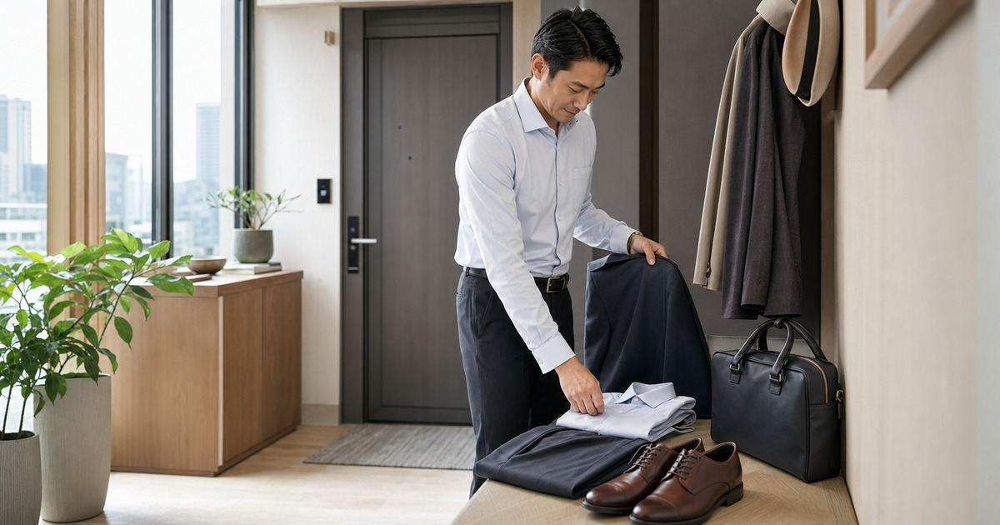

男士通勤不只一套西裝：襯衫、西裝褲、外套與皮鞋的場合清單
用會議、日常通勤、婚禮與面試四種場合，整理男士衣櫥真正需要先補的單品。

男士通勤衣櫥不必靠一整套西裝撐住所有場合。真正常見的困擾，是平日會議、臨時拜訪、婚禮邀約和面試通知都擠在同一季，卻只有幾件彼此不太能搭的單品。先把場合分清楚，再補襯衫、西裝褲、外套與皮鞋，衣櫥會比盲目添購成套服裝更靈活。
先分出三種正式程度
第一層是日常上班：乾淨襯衫、好活動的長褲和低調鞋款就足夠。第二層是對外會議：外套、皮帶、鞋面狀態和襯衫領口會被放大。第三層才是婚禮、面試或重要簡報，需要更完整的正式感。
把衣櫥按正式程度排好，會知道下一件該補什麼，而不是每次都買一件看似安全的深色上衣。
若衣櫥目前只有休閒服，第一件不必追求華麗，而是挑一件能搭三種褲子的襯衫。它能出現在週一會議，也能在週五晚餐不顯得太正式。
- 日常上班：重視耐穿、好洗、好活動。
- 對外會議：重視領口、褲線與鞋面整潔。
- 正式場合：重視整體比例與材質一致。
襯衫先看領口和肩線
襯衫最先被看見的位置，不是花色，而是領口是否服貼、肩線是否落在正確位置。若平日常背包或久坐，袖長和腋下活動量也比布料名稱更早影響舒適度。
白色、淺藍或細紋襯衫最容易進入通勤衣櫥；想送禮時，建議先確認對方常穿的尺寸與洗滌習慣，再挑款式。
褲長也是常被忽略的細節。褲腳堆太多會顯得拖沓，太短則容易讓正式感下降；若不確定，先選能修改褲長的款式會更有彈性。
- 領口能扣上但不勒。
- 肩線不要明顯外滑。
- 袖口露出外套一點即可。
Elite 嚴選
褲子決定整體是否俐落
一件好的通勤褲，不只要看腰圍，也要看坐下、走路、搭車時是否拉扯。西裝褲適合對外場合，休閒長褲適合日常辦公；如果一天中會在辦公室、客戶現場和通勤之間切換，布料彈性和抗皺感會很重要。
GIBBON 男裝、豪挺紳士西服與 NARMES 可以分別從日常通勤、正式西服和不同版型需求切入。比較時請回到商品頁確認尺寸表、材質和洗滌方式。
外套則可以先用季節來分。春夏重視薄、挺和不悶，秋冬再看內搭空間；這樣同一件外套才不會只在少數場合出現。
外套和鞋子是場合開關
同一件襯衫和長褲，搭上不同外套與鞋子，正式程度會立刻改變。深色外套適合重要會議，輕薄夾克適合日常通勤；皮鞋或乾淨休閒鞋則會決定整體是否像準備好出門。
鞋子不一定要多，但需要維持乾淨。若鞋面磨損明顯，即使衣服合身，也會讓正式感下降。
真正能留下來的通勤單品，通常不是最搶眼的那件，而是洗後好整理、早上好搭配、坐一整天也不彆扭的那件。這種標準看似樸素，卻最接近每天會穿出門的現實，也最能減少臨時出門前的猶豫。
- 會議日：外套和皮鞋先準備。
- 一般通勤：保持鞋面乾淨比款式更重要。
- 婚禮面試：避免臨時穿新鞋上場。
建立一套備用正式組合
衣櫥裡最好保留一套不用思考就能穿出門的正式組合：襯衫、長褲、外套、皮帶和鞋子都能彼此搭配。它不是每天穿，而是替臨時場合留餘裕。
這套組合越簡單越好，顏色以白、深藍、灰、黑和咖啡為主，日後再用領帶、包款或外套微調個性。
同主題品牌參考
FAQ
這篇文章適合直接照單購買嗎？
不建議。每個家庭、通勤路線、身形、膚況或空間條件都不同，請先用文中的順序盤點自己的使用情境，再回到商品頁確認規格。
商品價格、活動或庫存可以以本文為準嗎？
不可以。價格、活動、庫存、規格、尺寸與配送條件都可能變動，請以下單前看到的商品頁或店家頁公告為準。
涉及保養、照護、兒童或健康用品時要注意什麼？
請把本文視為一般生活整理與選購情境參考；若涉及健康、照護、皮膚、兒童食用或輔具使用，應優先看商品標示並諮詢合格專業人員。
下一步建議
先盤點一週最常出現的場合，再從襯衫、褲子、外套與鞋子補齊一套穩定通勤組合。
重要警語
商品尺寸、版型、材質與庫存請以下單前商品頁公告為準；送禮前建議先確認對方常穿尺寸與使用情境。
本文含品牌／商品導購連結；若你透過部分商品連結前往選購，Elite Fashion 可能取得合作收益。本文仍以編輯判斷與使用情境整理為主，價格、規格、活動與庫存請以商品頁公告為準。